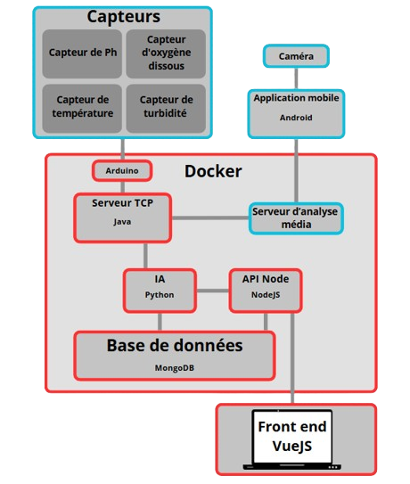
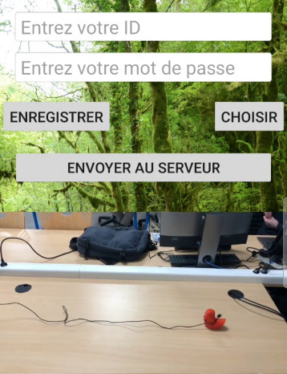

Projet universitaire :
Prédiction de la qualité des cours d'eau

Serveur TCP
API Node
Applications android et serveur d'analyse média
L’application mobile, développée sous Android, avait pour objectif de permettre la sélection ou l’enregistrement d’une vidéo, puis sa transmission au serveur dédié à l’analyse. Son interface se compose de deux champs texte destinés à l’identification, de deux boutons – l’un pour accéder à la galerie, l’autre pour activer la caméra – ainsi que d’un lecteur vidéo intégré permettant de visualiser l’élément sélectionné (voir Trace II à droite).
La réalisation de cette interface a mobilisé plusieurs savoir-faire liés au développement mobile natif. J’ai utilisé des composants standards d’Android (EditText, Button, VideoView) et mis en place la gestion des permissions pour l’accès à la caméra et au stockage. Il a également fallu organiser clairement les étapes de capture ou de sélection d’une vidéo, son affichage immédiat, et son envoi, en respectant le cycle de vie des activités Android.
La mise en œuvre de la communication entre l’application et le serveur a nécessité un travail approfondi, notamment pour assurer le transfert de fichiers via le protocole TCP. J’ai adapté le traitement des flux binaires côté Android afin de garantir un envoi stable et cohérent avec les attentes du serveur distant. Ce processus a impliqué une gestion précise des permissions, des formats d’encodage et des connexions réseau.
L’application transmet uniquement la vidéo ; l’analyse, réalisée côté serveur, repose sur l’observation d’un témoin visuel – un canard en plastique – dont la taille connue permet d’estimer la vitesse du courant. L’efficacité de ce dispositif dépend directement de la qualité de la capture et de l’intégrité du média transmis, ce qui confère à cette application un rôle essentiel dans la chaîne technique.
